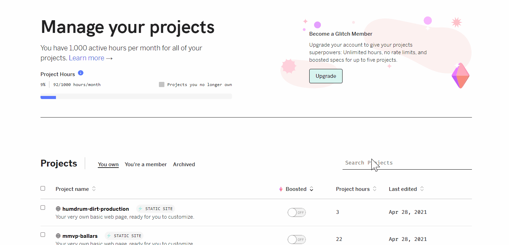

Everyone's Progress
CJ Lin:
- Bought models and imported to glitch project
- Improve the game physics by making adjustments to the collisions and translations
- Designed and implemented the overlay for the main menu
- Implemented a simple feedback algorithm that informs the user how they are throwing based on their feedback
Peter Michael:
- Got pose keypoints stream working
Yan Zhe Ong:
- Worked wit Jasmine to figure out how to code the magic leap controller
- Got the ball to shoot from a static and dynamic position
Jasmine Woon:
- Worked with Yan to figure out how to code the magic leap controller
- Got the ball to shoot from a static and dynamic position
- Started looking Raycaster
Updates on Code
As of April 29th, 2021, BallARs will now be combining all individual projects into one project. Up until now, everyone has been working on their own project that has been hosted locally on their own computer or glitch. As a result, we did not have the best developer enviroment for the past 5 weeks! Take a look at how many glitch projects were remixed to test various controls.
 Many many glitch projects
Once we intergrated everyone's part to a single project, we will have a better dev enviroment and we will be able to host our WebAR project!
Once we intergrated everyone's part to a single project, we will have a better dev enviroment and we will be able to host our WebAR project!
This week we had to buckle down as we inch closer to demonstrating our MVP next week. We would like to give a shoutout to CSE VR Capstone Team 1 for sharing how they implemented a throwing mechanism for their VR dodgeball game. It gave us inspiration how we will determine how we throw our virtual basketball.
Updates on Ideas
With the MVP due just around the corner, it was crunch time for BallARs. We had a great start when brainstorming and designing features for our AR application until we had to implement it. This past week, we shifted around responsibilities because we overestimated and underestimated how quickly some task can be done. For example, one struggle for our team was getting the controllers to trigger an event when we thought it can be done in within a few days has expanded to a week. However, we were able to make progress by asking for help and from trial and error!
Earlier this week, we had the virtual basically stay in one position and with the press of the trigger, the ball was shot forward into the hoop.
shooting basketball at a static location
Now the user can move the ball around and shoot from various locations of their room. However, the ball will only move straight for now. Yan and Jasmine has an idea of how to calculate the velocity and angle the ball which will be crucial to give the trajectory of the ball a realistic feel of shooting.
Moving ball around and shooting various locations
With the shooting mechanism almost what we envisioned for our MVP, we needed the feedback to incorperate in our AR application. Check out a simple feedback interface that CJ works on browser.
Simple feedback from game physics
CJ has been also working on the main menu screen that works on the browser
main menu
Plan for Next Week
Here are a couple of milestones that everyone plans on doing
CJ Lin:
Goals for Monday 5/3
Goals for Thursday 5/6
Peter Michael:
Goals for Monday 5/3
Goals for Thursday 5/6
Yan Zhe Ong:
Goals for Monday 5/3
Goals for Thursday 5/6
Jasmine Woon:
Goals for Monday 5/3
Goals for Thursday 5/6
Blocking Issues
Jasmine and Yan are still trying to figure out how to use a combination of the ball and controller position in separate timeframes in order to figure out the angle and velocity of the user's shot
In the future, we hope that the user can the Raycaster for positioning the virtual hoop. One blocking issue that Jasmine stumbled upon was the raycaster's showline disappears after a few seconds. She's hasn't had time to explore why the line disappears but hypothesizes that the she needs to implement a method that refreshes the showline.
Red line from raycaster disspears in seconds